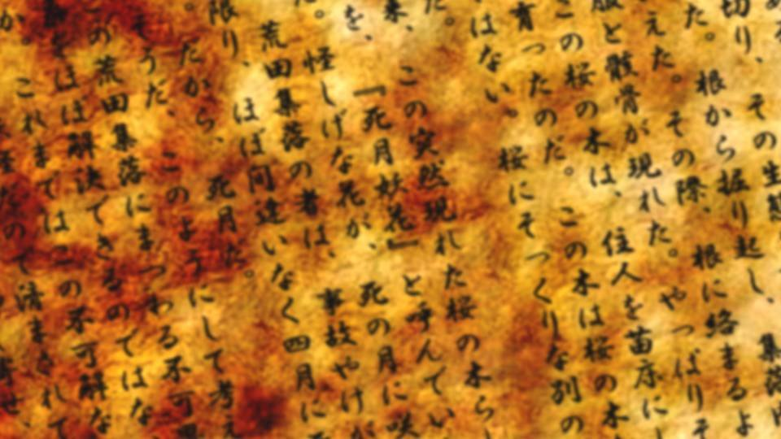

Script 00002199

住人たちの失踪は1度だけではなかった。
過去に何度か翠眼や女神によって集落は危機に瀕した。
そしてなんと、わずか10年ほど前にも住人たちの失踪事件があったというのだ。
過去に何度か翠眼や女神によって集落は危機に瀕した。
そしてなんと、わずか10年ほど前にも住人たちの失踪事件があったというのだ。
お義母さんに頼み、当時のことを書き記した書簡を見せてもらった。
さらにそれを蔵書として預からせてもらった。
蔵書にさせてもらったのは、記憶の風化の恐れ、そしてその文書を後世に伝えるためである。
さらにそれを蔵書として預からせてもらった。
蔵書にさせてもらったのは、記憶の風化の恐れ、そしてその文書を後世に伝えるためである。
晃さんは言った。
それがドローガに関係するのか？ と。
私は答えた。
ドローガはここにしかない。だからここにしかないものから原因を考えるのが筋だ、と。
お義母さんの文書の中にはこのような記述があった。
それがドローガに関係するのか？ と。
私は答えた。
ドローガはここにしかない。だからここにしかないものから原因を考えるのが筋だ、と。
お義母さんの文書の中にはこのような記述があった。

『集団失踪が起きた次の年の春、荒田集落周辺に、見覚えのない桜の木が数十本増えていることに気がついた。
去年までは木の影も形もないような場所に、突然現れたのだ。
さも、毎年満開の花をつけていたかのように、大きな桜の木が誇らしげに桜の花を見せつけていた』
『突然現れた桜の木の数はおよそ30本。
奇しくも、失踪した住人の数とほぼ同じである』
『我々は新しく生えた木の1本を切り、その生態を調べてみることにした。根から掘り起こし、集落内に植えかえた。
その際、根に絡まるように衣服と骸骨が現れた。
やっぱりそうだ、この桜の木は、住人を苗床にして突然育ったのだ。
この木は桜の木なんかではない。
桜にそっくりな別の何か、だ』
『古来、この突然現れた桜の木らしきものを、『死月妖花』と呼んでいたそうだ。
怪しげな花が、死の月に咲くのだ。
荒田集落の者は、事故やけがでない限り、ほぼ間違いなく四月に死亡する。
だから、死月だ』
『そうだ、このようにして考えれば、この荒田集落にまつわる不可思議な現象をほぼ解決できるのではないだろうか。
これまではこの不可解な現象は呪いだの妖怪だので済まされてきたが、今や列強が日本に押し寄せ、西洋化が進むと見込まれる時代だ。
そろそろこの神話主義から脱却し、現実的に荒田集落の謎を解き明かさなくてはならない』
『その一環として、この荒田集落から代表者を東京に向かわせる。
ドローガを持たせ、帝あるいは政権を握る者に献上させる。
しかるべき人物に出会うことができれば、潤沢な資金と設備で研究できるだろうが、ドローガの謎が解かれるのはいつになるのか――
例え100年かかるとしても、世代を越えて解き明かすべきだろう』
お義母さんもぼんやりと、失踪事件とドローガの関連性に気づいていたようだ。
だから晃さんにドローガを持たせ、帝に謁見させた。
しかし帝に受け取ってもらえずドローガの研究は頓挫。
代わりに私がやってきたものだから、その研究を私自身が行っている。
だから晃さんにドローガを持たせ、帝に謁見させた。
しかし帝に受け取ってもらえずドローガの研究は頓挫。
代わりに私がやってきたものだから、その研究を私自身が行っている。
なるほど、『死月妖花』か。
桜にそっくりな『死月妖花』は、根から作られたドローガを介し、何らかの方法で人間を利用して桜を増やしている。
生物としてはつじつまの合う話だ。
桜にそっくりな『死月妖花』は、根から作られたドローガを介し、何らかの方法で人間を利用して桜を増やしている。
生物としてはつじつまの合う話だ。
しかし……。
どうしてだろう、何かが引っかかる。
怪しいならばドローガの使用を速やかに中止させればいいだけの話だ。
お義母さんはそれをしていない……。
どうしてだろう、何かが引っかかる。
怪しいならばドローガの使用を速やかに中止させればいいだけの話だ。
お義母さんはそれをしていない……。


「晃さん、お義母さんがドローガの使用を容認している理由はありますか？」
「うーん……それは本人に聞いてみないと、何ともな……」
「ですよね……」
「うーん……それは本人に聞いてみないと、何ともな……」
「ですよね……」
私はお義母さんを怪しんでいるわけではない。
お義母さんはドローガが危険なものと気づいていながら容認している。
おそらく、そうせざるを得ない理由があるのだ。
お義母さんはドローガが危険なものと気づいていながら容認している。
おそらく、そうせざるを得ない理由があるのだ。